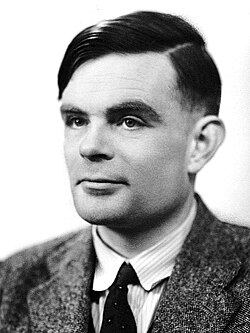
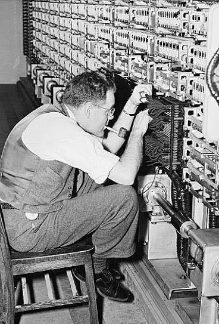

Biografia: Vida y trayectoria científica
Pionero en el desarrollo de la Inteligencia Artificial y la computacion moderna.
 Leer más...
Leer más...
Alan Mathison Turing constituye una de las figuras fundamentales en la historia de la computación y de las ciencias de la información. Sus investigaciones permitieron establecer fundamentos teóricos para comprender qué significa realizar un cálculo mediante un procedimiento mecánico y cuáles son los límites de aquello que puede ser computado.

Alan Turing es considerado pionero de la inteligencia artificial, ya que fue una de las personas que cuestiono si las maquinas podrian llegar a tener un comportamiento considerado inteligete.
Pionero en el desarrollo de la Inteligencia Artificial y la computacion moderna.
Leer más...
Los aportes de Alan Turing abarcan diferentes áreas científicas, aunque pueden identificarse tres líneas principales de investigación: la teoría de la computación, el criptoanálisis y el estudio de la inteligencia de las máquinas.

Leer más...Las investigaciones de Alan Turing produjeron consecuencias significativas tanto en el ámbito científico como en el tecnológico y militar. Su importancia no reside únicamente en los dispositivos o métodos desarrollados durante su vida, sino también en los conceptos teóricos que posteriormente se convirtieron en fundamentos de disciplinas enteras.
 Leer más...
Leer más...